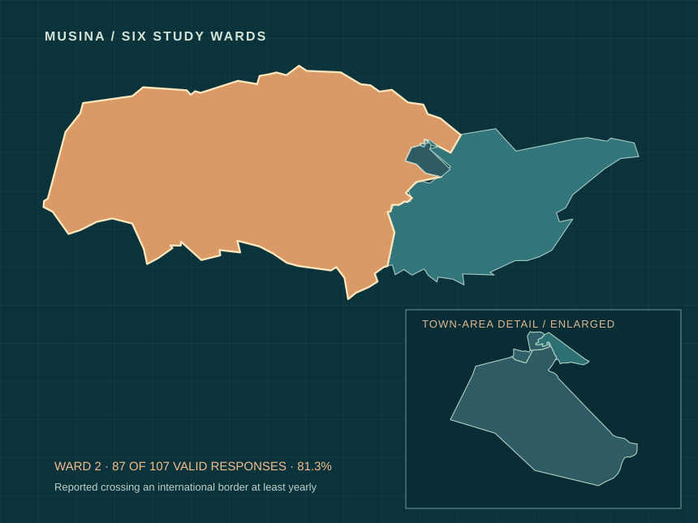

KB.Kabiri BuleResearch · Data · Technology
An evidence-led research and technology laboratory
A border is not the end of a life.
Ward 2 in a Musina survey: 87 of 107 valid respondents reported crossing an international border at least yearly.
629 study respondents · Six wards · Interactive evidence
Field atlas / MusinaSouth Africa / 01
